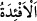

İnsanların havâssı/seçkinleri, sayılan dört çeşit ruhta avâm ile beraberdir. Fenâ-i
tâm[118] hâlinde Allâh’ın üflediği kudsî ruh ile onlardan ayrılırlar.
Allah bizi ve sizi bu kudsî ruhla hayat süren kimselerden kılsın ve bizi nice nice
mânevî fethlere eriştirsin!
Ey Âdemoğulları! “Ve sizin” menfaatleriniz “için” tevhid ve yeniden diriltmeden
bahseden tenzîlî (Allah tarafından indirilen Kur’an’daki) âyetleri işitecek “kulaklar,”
tevhid ve yeniden diriltmeye şâhid/delil olan tekvînî (kâinâtta yaratılmış) âyetleri
görecek “gözler,” tenzîlî ve tekvînî âyetleri akledip onların hakîkatine yol bulacak
“kalpler yaratmıştır.”
“__WORD__ kelimesi, kalb anlamındaki “__WORD__ kelimesinin çoğuludur. Kalbde yanıp tutuşma
mânâsı olduğu kabul edildiği zaman ancak bu kelime kullanılır.
“Ne kadar az şükrediyorsunuz!” Yâni bu nîmetlerin Rabbine/sâhibine çok az
şükrediyorsunuz. Buradaki ‘azlık’ şükrün yapılmadığı ve hiç olmadığı anlamındadır. Bu
âyet, insanların çoğunun bu nîmetlere ve onların sâhibine karşı nankörlükte bulunduğunu
beyan etmektedir.
Burada şuna işâret vardır: Rabbini kendisinde Muhsinliği ile tecellî eden olarak
tanımak için kendisini ayna olarak tanıyan insan pek azdır. Halbuki Allah Teâlâ onu,
kendi zâtını ve sıfatlarını tanımak için yaratmıştır. Nitekim O şöyle buyurmuştur: “Ben
cinleri ve insanları ancak bana kulluk etsinler” yâni ancak beni tanısınlar “diye
yarattım.” (ez-Zâriyât, 51/56). İnsan, hakîkî ma‘rifet mertebesine ancak Rasûlullah
(s.a.) ve O’nun vârisinin delâletiyle ulaşabilir.
Hak Sübhânehû ve Teâlâ bütün âlemi yarattı; felek, melek, arş, kürsî, levh, kalem,
cennet, cehennem, gökyüzü, yeryüzü. Bu yarattıklarına hiç şefkat ve muhabbet nazarıyla
bakmadı. Bunlara peygamber göndermedi; haber vermedi. Sıra lütuf ve ihsan, fazl ve
keremin nihâyetsizce ikram edildiği, ilâhî nur ve sır madeni olan, topraktan yaratılan
insana gelince, Cenâb-ı Hak kendi lütuf ve kereminden onları zâtının nazar mahalli
kıldı. Hidâyete ersinler diye onlara peygamber gönderdi. Melekleri onlara koruyucu ve
gözetleyici kıldı. Şefkat ateşini sînelerine koydu. Gönüllerine aşk ateşini attı. Îman
satırlarını gönüllerinin sayfalarına yazdı. Muhabbet yazısını kalplerine çekti. Dünyâ
nîmetlerini ve güzel rızıkları müminler için yarattı. Nitekim şöyle buyurdu: “De ki:
Allâh’ın kulları için yarattığı süsü ve temiz rızıkları kim haram kıldı? De ki:
Onlar, dünyâ hayatında, özellikle kıyâmet gününde mü’minlerindir.” (el-A‘râf,
7/32) Kâfirin dünyâda rızkını yemesi, mü’minler sayesindedir. “özellikle kıyâmet
gününde” buyurmasına gelince, kıyâmet gününün sadece mü’min içindir, kâfir için bir
yudum su bile yoktur.”
Akıl sâhibi kimsenin yapması gereken, nîmetleri ve nîmet sâhibini tanımak ve
tembellerden olmamak için şükür hizmetinde gayret göstermektir. Güçleri, uzuvları ve
bütün iç ve dış nîmetlere şükür ehlinden olduğu zaman Allah ona şükrünün karşılığını
verir. Yâni onun tâatini kabul eder, kendi katında şerefli varlıklar arasında onu över ve